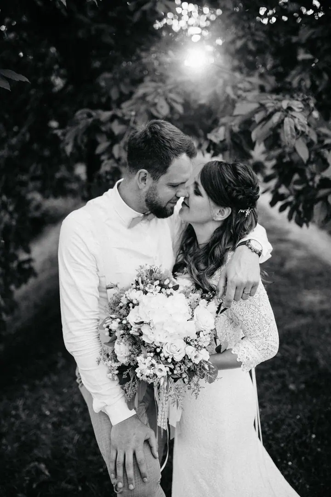
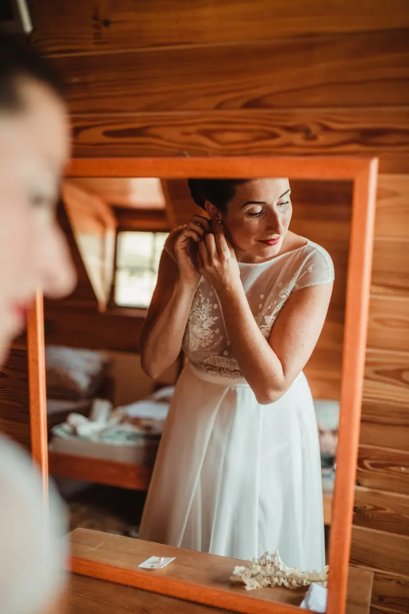

Svatby
Na svatbu za vámi ráda přijedu a fotím ji jako mix reportážních a uměleckých záběrů. Do 20 km od Brna je doprava zdarma.

Svatební a rodinná fotografka
Jmenuji se Kateřina Štarhová a v Brně fotím svatby, páry, děti a rodiny. Můj styl je mixem reportážních a uměleckých záběrů a fotky mají jediný úkol: abyste se k nim po letech vraceli a cítili to, co tehdy.
Zeptat se na termín
Na svatbu za vámi ráda přijedu a fotím ji jako mix reportážních a uměleckých záběrů. Do 20 km od Brna je doprava zdarma.
Focení pro dva, kde jde hlavně o vás a vaši blízkost. Fotím venku i v ateliéru v Brně.
Fotografie mě fascinovala už od dětství. Dodnes ráda listuji rodinnými alby, protože se mi při každé fotce vybaví konkrétní chvíle a emoce. Právě to chci dát i vám: fotky, u kterých si zavzpomínáte a usmějete se.
Fotím svatby, očekávání miminka, první dny na světě i dětský smích. V Brně mám vlastní ateliér na Zábrdovické ulici, vybavený pro focení novorozenců, starších dětí i celých rodin. Stejně ráda ale vyrazím ven do exteriéru nebo za vámi na svatbu.
Do každé fotografie, kterou pro vás vytvořím, dávám i kus sebe. Každou výslednou fotku pečlivě upravuji, aby byla co nejlepší a přitom věrná tomu, co se opravdu stalo. Ráda kombinuji barvu i černobílé provedení.
Pošlete mi, co chcete fotit. U svatby prosím připojte datum, místo a styl vašeho dne.
Společně najdeme termín a vybereme, jestli budeme fotit v ateliéru v Brně, nebo venku.
Fotím v klidu a s citem pro atmosféru. U novorozenců počítejte se 2 až 3 hodinami, aby miminko mělo čas na spánek i krmení.
Z náhledů v soukromé online galerii si vyberete fotky. Hotové snímky dodám do 4 až 6 týdnů od zaslání vašeho výběru.
Svatební fotografie vychází od 10 000 do 19 000 Kč podle rozsahu dne. Napište mi datum, místo a styl svatby a pošlu vám přesnou nabídku.
Ideálně do 14 dní po porodu, kdy jsou miminka hodně spavá a nechají se krásně polohovat. Doporučuji ozvat se už v těhotenství, ať snáz najdeme volný termín.
Upravené fotografie dodávám do 4 až 6 týdnů od zaslání vybraných náhledů. V sezoně se tato lhůta může výjimečně prodloužit.
Ráda. Do 20 km od Brna je doprava zdarma, dál účtuji 8 Kč/km.